7 Moving Beyond Linearity
7.1 Conceptual
7.1.1 Question 1
It was mentioned in the chapter that a cubic regression spline with one knot at \(\xi\) can be obtained using a basis of the form \(x, x^2, x^3, (x-\xi)^3_+\), where \((x-\xi)^3_+ = (x-\xi)^3\) if \(x>\xi\) and equals 0 otherwise. We will now show that a function of the form \[ f(x)=\beta_0 +\beta_1x+\beta_2x^2 +\beta_3x^3 +\beta_4(x-\xi)^3_+ \] is indeed a cubic regression spline, regardless of the values of \(\beta_0, \beta_1, \beta_2, \beta_3,\beta_4\).
- Find a cubic polynomial \[ f_1(x) = a_1 + b_1x + c_1x^2 + d_1x^3 \] such that \(f(x) = f_1(x)\) for all \(x \le \xi\). Express \(a_1,b_1,c_1,d_1\) in terms of \(\beta_0, \beta_1, \beta_2, \beta_3, \beta_4\).
In this case, for \(x \le \xi\), the cubic polynomial simply has terms \(a_1 = \beta_0\), \(b_1 = \beta_1\), \(c_1 = \beta_2\), \(d_1 = \beta_3\)
- Find a cubic polynomial \[ f_2(x) = a_2 + b_2x + c_2x^2 + d_2x^3 \] such that \(f(x) = f_2(x)\) for all \(x > \xi\). Express \(a_2, b_2, c_2, d_2\) in terms of \(\beta_0, \beta_1, \beta_2, \beta_3, \beta_4\). We have now established that \(f(x)\) is a piecewise polynomial.
For \(x \gt \xi\), the cubic polynomial would be (we include the \(\beta_4\) term). \[\begin{align} f(x) = & \beta_0 + \beta_1x + \beta_2x^2 + \beta_3x^3 + \beta_4(x-\xi)^3 \\ = & \beta_0 + \beta_1x + \beta_2x^2 + \beta_3x^3 + \beta_4(x^3 - 3x^2\xi + 3x\xi^2 -\xi^3) \\ = & \beta_0 - \beta_4\xi^3 + (\beta_1 + 3\beta_4\xi^2)x + (\beta_2 - 3\beta_4\xi)x^2 + (\beta_3 + \beta_4)x^3 \end{align}\]
Therefore, \(a_2 = \beta_0 - \beta_4\xi^3\), \(b_2 = \beta_1 + 3\beta_4\xi^2\), \(c_2 = \beta_2 - 3\beta_4\xi\), \(d_2 = \beta_3 + \beta_4\)
- Show that \(f_1(\xi) = f_2(\xi)\). That is, \(f(x)\) is continuous at \(\xi\).
To do this, we replace \(x\) with \(\xi\) in the above equations and simplify.
\[\begin{align} f_1(\xi) = \beta_0 + \beta_1\xi + \beta_2\xi^2 + \beta_3\xi^3 \end{align}\]
\[\begin{align} f_2(\xi) = & \beta_0 - \beta_4\xi^3 + (\beta_1 + 3\beta_4\xi^2)\xi + (\beta_2 - 3\beta_4\xi)\xi^2 + (\beta_3 + \beta_4)\xi^3 \\ = & \beta_0 - \beta_4\xi^3 + \beta_1\xi + 3\beta_4\xi^3 + \beta_2\xi^2 - 3\beta_4\xi^3 + \beta_3\xi^3 + \beta_4\xi^3 \\ = & \beta_0 + \beta_1\xi + \beta_2\xi^2 + \beta_3\xi^3 \end{align}\]
- Show that \(f_1'(\xi) = f_2'(\xi)\). That is, \(f'(x)\) is continuous at \(\xi\).
To do this we differentiate the above with respect to \(x\).
\[ f_1'(x) = \beta_1 + 2\beta_2x + 3\beta_3x^2 \\ f_1'(\xi) = \beta_1 + 2\beta_2\xi + 3\beta_3\xi^2 \]
\[\begin{align} f_2'(x) & = \beta_1 + 3\beta_4\xi^2 + 2(\beta_2 - 3\beta_4\xi)x + 3(\beta_3 + \beta_4)x^2 \\ f_2'(\xi) & = \beta_1 + 3\beta_4\xi^2 + 2(\beta_2 - 3\beta_4\xi)\xi + 3(\beta_3 + \beta_4)\xi^2 \\ & = \beta_1 + 3\beta_4\xi^2 + 2\beta_2\xi - 6\beta_4\xi^2 + 3\beta_3\xi^2 + 3\beta_4\xi^2 \\ & = \beta_1 + 2\beta_2\xi + 3\beta_3\xi^2 \end{align}\]
- Show that \(f_1''(\xi) = f_2''(\xi)\). That is, \(f''(x)\) is continuous at \(\xi\).
Therefore, \(f(x)\) is indeed a cubic spline.
\[ f_1''(x) = 2\beta_2 + 6\beta_3 x \\ f_1''(\xi) = 2\beta_2 + 6\beta_3 \xi \]
\[ f_2''(x) = 2\beta_2 - 6\beta_4\xi + 6(\beta_3 + \beta_4)x \\ \] \[\begin{align} f_2''(\xi) & = 2\beta_2 - 6\beta_4\xi + 6\beta_3\xi + 6\beta_4\xi \\ & = 2\beta_2 + 6\beta_3\xi \end{align}\]
Hint: Parts (d) and (e) of this problem require knowledge of single-variable calculus. As a reminder, given a cubic polynomial \[f_1(x) = a_1 + b_1x + c_1x^2 + d_1x^3,\] the first derivative takes the form \[f_1'(x) = b_1 + 2c_1x + 3d_1x^2\] and the second derivative takes the form \[f_1''(x) = 2c_1 + 6d_1x.\]
7.1.2 Question 2
Suppose that a curve \(\hat{g}\) is computed to smoothly fit a set of \(n\) points using the following formula: \[ \DeclareMathOperator*{\argmin}{arg\,min} % Jan Hlavacek \hat{g} = \argmin_g \left(\sum_{i=1}^n (y_i - g(x_i))^2 + \lambda \int \left[ g^{(m)}(x) \right]^2 dx \right), \] where \(g^{(m)}\) represents the \(m\)th derivative of \(g\) (and \(g^{(0)} = g\)). Provide example sketches of \(\hat{g}\) in each of the following scenarios.
- \(\lambda=\infty, m=0\).
Here we penalize the \(g\) and an infinite \(\lambda\) means that this penalty dominates. This means that the \(\hat{g}\) will be 0.
- \(\lambda=\infty, m=1\).
Here we penalize the first derivative (the slope) of \(g\) and an infinite \(\lambda\) means that this penalty dominates. Thus the slope will be 0 (and otherwise best fitting \(x\), i.e. at the mean of \(x\)).
- \(\lambda=\infty, m=2\).
Here we penalize the second derivative (the change of slope) of \(g\) and a infinite \(\lambda\) means that this penalty dominates. Thus the line will be straight (and otherwise best fitting \(x\)).
- \(\lambda=\infty, m=3\).
Here we penalize the third derivative (the change of the change of slope) of \(g\) and an infinite \(\lambda\) means that this penalty dominates. In other words, the curve will have a consistent rate of change (e.g. a quadratic function or similar).
- \(\lambda=0, m=3\).
Here we penalize the third derivative, but a value of \(\lambda = 0\) means that there is no penalty. As a result, the curve is able to interpolate all points.
7.1.3 Question 3
Suppose we fit a curve with basis functions \(b_1(X) = X\), \(b_2(X) = (X - 1)^2I(X \geq 1)\). (Note that \(I(X \geq 1)\) equals 1 for \(X \geq 1\) and 0 otherwise.) We fit the linear regression model \[Y = \beta_0 +\beta_1b_1(X) + \beta_2b_2(X) + \epsilon,\] and obtain coefficient estimates \(\hat{\beta}_0 = 1, \hat{\beta}_1 = 1, \hat{\beta}_2 = -2\). Sketch the estimated curve between \(X = -2\) and \(X = 2\). Note the intercepts, slopes, and other relevant information.
x <- seq(-2, 2, length.out = 1000)
f <- function(x) 1 + x + -2 * (x - 1)^2 * I(x >= 1)
plot(x, f(x), type = "l")
grid()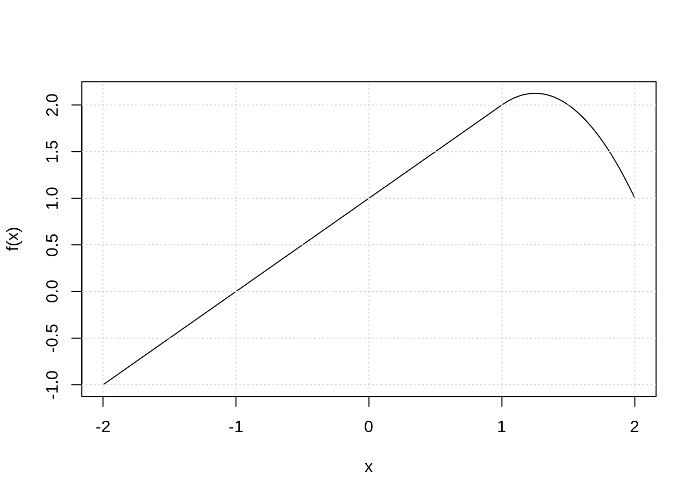
7.1.4 Question 4
Suppose we fit a curve with basis functions \(b_1(X) = I(0 \leq X \leq 2) - (X -1)I(1 \leq X \leq 2),\) \(b_2(X) = (X -3)I(3 \leq X \leq 4) + I(4 \lt X \leq 5)\). We fit the linear regression model \[Y = \beta_0 +\beta_1b_1(X) + \beta_2b_2(X) + \epsilon,\] and obtain coefficient estimates \(\hat{\beta}_0 = 1, \hat{\beta}_1 = 1, \hat{\beta}_2 = 3\). Sketch the estimated curve between \(X = -2\) and \(X = 6\). Note the intercepts, slopes, and other relevant information.
x <- seq(-2, 6, length.out = 1000)
b1 <- function(x) I(0 <= x & x <= 2) - (x - 1) * I(1 <= x & x <= 2)
b2 <- function(x) (x - 3) * I(3 <= x & x <= 4) + I(4 < x & x <= 5)
f <- function(x) 1 + 1 * b1(x) + 3 * b2(x)
plot(x, f(x), type = "l")
grid()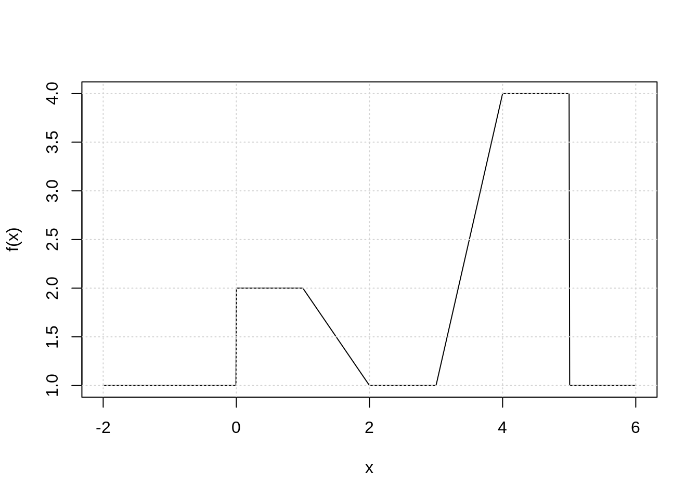
7.1.5 Question 5
Consider two curves, \(\hat{g}\) and \(\hat{g}_2\), defined by
\[ \hat{g}_1 = \argmin_g \left(\sum_{i=1}^n (y_i - g(x_i))^2 + \lambda \int \left[ g^{(3)}(x) \right]^2 dx \right), \] \[ \hat{g}_2 = \argmin_g \left(\sum_{i=1}^n (y_i - g(x_i))^2 + \lambda \int \left[ g^{(4)}(x) \right]^2 dx \right), \]
where \(g^{(m)}\) represents the \(m\)th derivative of \(g\).
- As \(\lambda \to \infty\), will \(\hat{g}_1\) or \(\hat{g}_2\) have the smaller training RSS?
\(\hat{g}_2\) is more flexible (by penalizing a higher derivative of \(g\)) and so will have a smaller training RSS.
- As \(\lambda \to \infty\), will \(\hat{g}_1\) or \(\hat{g}_2\) have the smaller test RSS?
We cannot tell which function will produce a smaller test RSS, but there is a chance that \(\hat{g}_1\) will if \(\hat{g}_2\) overfits the data.
- For \(\lambda = 0\), will \(\hat{g}_1\) or \(\hat{g}_2\) have the smaller training and test RSS?
When \(\lambda = 0\) there is no penalty, so both functions will give the same result: perfect interpolation of the training data. Thus training RSS will be 0 but test RSS could be high.
7.2 Applied
7.2.1 Question 6
In this exercise, you will further analyze the
Wagedata set considered throughout this chapter.
- Perform polynomial regression to predict
wageusingage. Use cross-validation to select the optimal degree \(d\) for the polynomial. What degree was chosen, and how does this compare to the results of hypothesis testing using ANOVA? Make a plot of the resulting polynomial fit to the data.
library(ISLR2)
library(boot)
library(ggplot2)
set.seed(42)
res <- sapply(1:6, function(i) {
fit <- glm(wage ~ poly(age, i), data = Wage)
cv.glm(Wage, fit, K = 5)$delta[1]
})
which.min(res)## [1] 6plot(1:6, res, xlab = "Degree", ylab = "Test MSE", type = "l")
abline(v = which.min(res), col = "red", lty = 2)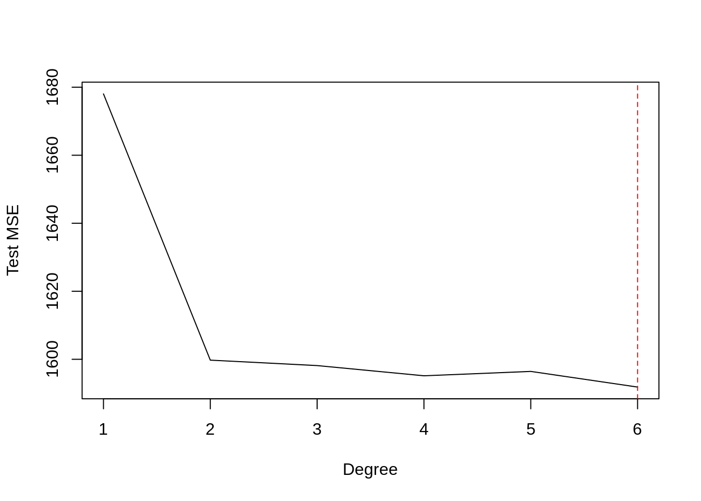
fit <- glm(wage ~ poly(age, which.min(res)), data = Wage)
plot(Wage$age, Wage$wage, pch = 19, cex = 0.4, col = alpha("steelblue", 0.4))
points(1:100, predict(fit, data.frame(age = 1:100)), type = "l", col = "red")##
## Call:
## glm(formula = wage ~ poly(age, 6), data = Wage)
##
## Coefficients:
## Estimate Std. Error t value Pr(>|t|)
## (Intercept) 111.7036 0.7286 153.316 < 2e-16 ***
## poly(age, 6)1 447.0679 39.9063 11.203 < 2e-16 ***
## poly(age, 6)2 -478.3158 39.9063 -11.986 < 2e-16 ***
## poly(age, 6)3 125.5217 39.9063 3.145 0.00167 **
## poly(age, 6)4 -77.9112 39.9063 -1.952 0.05099 .
## poly(age, 6)5 -35.8129 39.9063 -0.897 0.36956
## poly(age, 6)6 62.7077 39.9063 1.571 0.11620
## ---
## Signif. codes: 0 '***' 0.001 '**' 0.01 '*' 0.05 '.' 0.1 ' ' 1
##
## (Dispersion parameter for gaussian family taken to be 1592.512)
##
## Null deviance: 5222086 on 2999 degrees of freedom
## Residual deviance: 4766389 on 2993 degrees of freedom
## AIC: 30642
##
## Number of Fisher Scoring iterations: 2fit1 <- lm(wage ~ poly(age, 1), data = Wage)
fit2 <- lm(wage ~ poly(age, 2), data = Wage)
fit3 <- lm(wage ~ poly(age, 3), data = Wage)
fit4 <- lm(wage ~ poly(age, 4), data = Wage)
fit5 <- lm(wage ~ poly(age, 5), data = Wage)
anova(fit1, fit2, fit3, fit4, fit5)## Analysis of Variance Table
##
## Model 1: wage ~ poly(age, 1)
## Model 2: wage ~ poly(age, 2)
## Model 3: wage ~ poly(age, 3)
## Model 4: wage ~ poly(age, 4)
## Model 5: wage ~ poly(age, 5)
## Res.Df RSS Df Sum of Sq F Pr(>F)
## 1 2998 5022216
## 2 2997 4793430 1 228786 143.5931 < 2.2e-16 ***
## 3 2996 4777674 1 15756 9.8888 0.001679 **
## 4 2995 4771604 1 6070 3.8098 0.051046 .
## 5 2994 4770322 1 1283 0.8050 0.369682
## ---
## Signif. codes: 0 '***' 0.001 '**' 0.01 '*' 0.05 '.' 0.1 ' ' 1The selected degree is 4. When testing with ANOVA, degrees 1, 2 and 3 are highly significant and 4 is marginal.
- Fit a step function to predict
wageusingage, and perform cross-validation to choose the optimal number of cuts. Make a plot of the fit obtained.
set.seed(42)
res <- sapply(2:10, function(i) {
Wage$cats <- cut(Wage$age, i)
fit <- glm(wage ~ cats, data = Wage)
cv.glm(Wage, fit, K = 5)$delta[1]
})
names(res) <- 2:10
plot(2:10, res, xlab = "Cuts", ylab = "Test MSE", type = "l")
which.min(res)## 8
## 7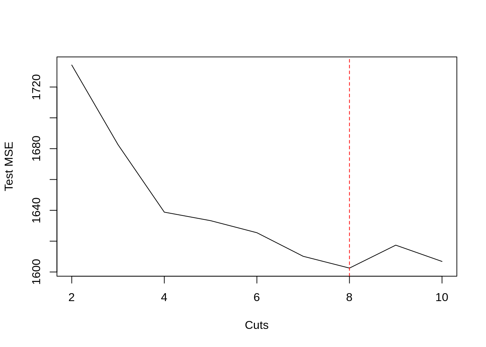
fit <- glm(wage ~ cut(age, 8), data = Wage)
plot(Wage$age, Wage$wage, pch = 19, cex = 0.4, col = alpha("steelblue", 0.4))
points(18:80, predict(fit, data.frame(age = 18:80)), type = "l", col = "red")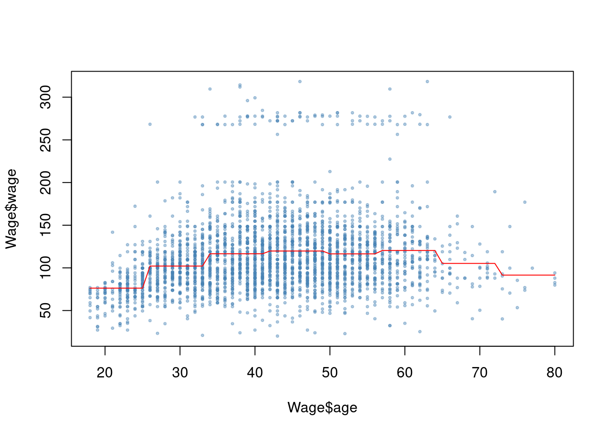
7.2.2 Question 7
The
Wagedata set contains a number of other features not explored in this chapter, such as marital status (maritl), job class (jobclass), and others. Explore the relationships between some of these other predictors andwage, and use non-linear fitting techniques in order to fit flexible models to the data. Create plots of the results obtained, and write a summary of your findings.
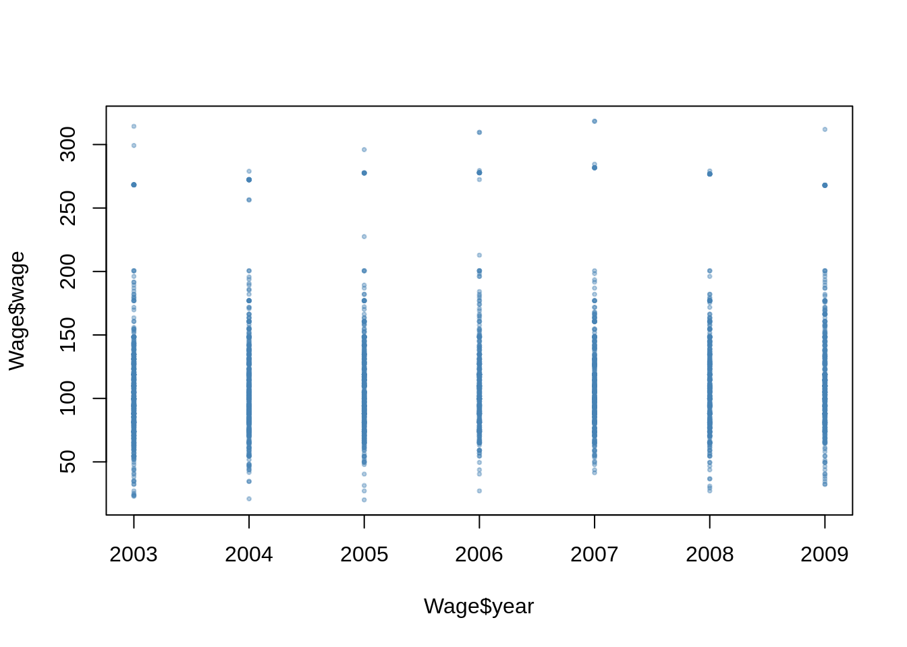
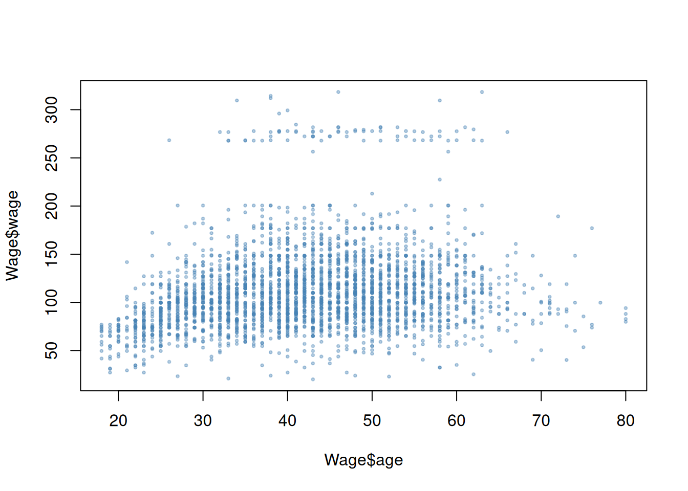
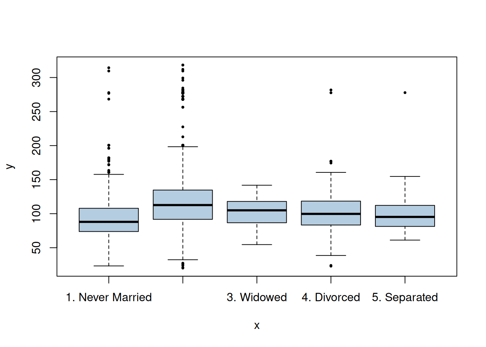
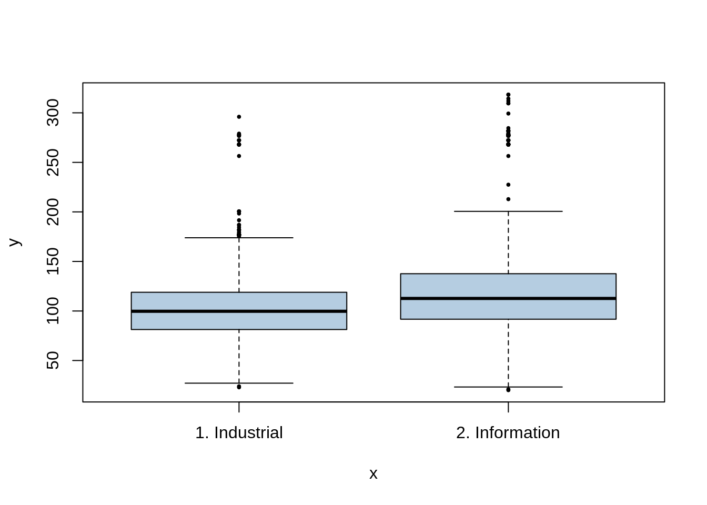
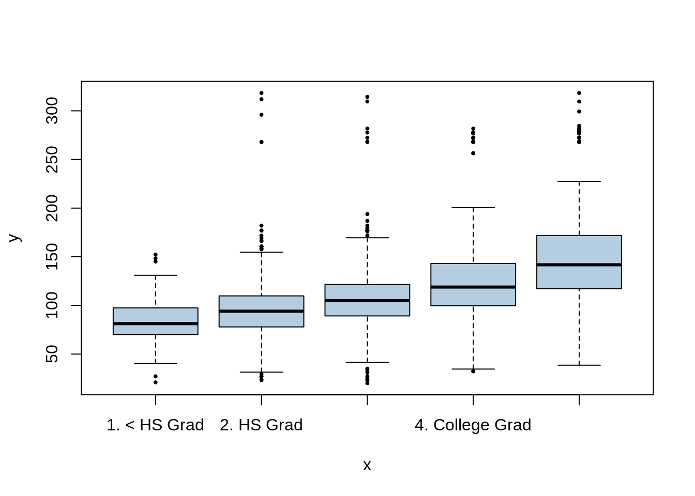
We have a mix of categorical and continuous variables and also want to incorporate non-linear aspects of the continuous variables. A GAM is a good choice to model this situation.
## Loading required package: splines## Loading required package: foreach## Loaded gam 1.22-7fit0 <- gam(wage ~ s(year, 4) + s(age, 5) + education, data = Wage)
fit2 <- gam(wage ~ s(year, 4) + s(age, 5) + education + maritl, data = Wage)
fit1 <- gam(wage ~ s(year, 4) + s(age, 5) + education + jobclass, data = Wage)
fit3 <- gam(wage ~ s(year, 4) + s(age, 5) + education + jobclass + maritl, data = Wage)
anova(fit0, fit1, fit2, fit3)## Analysis of Deviance Table
##
## Model 1: wage ~ s(year, 4) + s(age, 5) + education
## Model 2: wage ~ s(year, 4) + s(age, 5) + education + jobclass
## Model 3: wage ~ s(year, 4) + s(age, 5) + education + maritl
## Model 4: wage ~ s(year, 4) + s(age, 5) + education + jobclass + maritl
## Resid. Df Resid. Dev Df Deviance Pr(>Chi)
## 1 2986 3689770
## 2 2985 3677553 1 12218 0.0014286 **
## 3 2982 3595688 3 81865 1.071e-14 ***
## 4 2981 3581781 1 13907 0.0006687 ***
## ---
## Signif. codes: 0 '***' 0.001 '**' 0.01 '*' 0.05 '.' 0.1 ' ' 1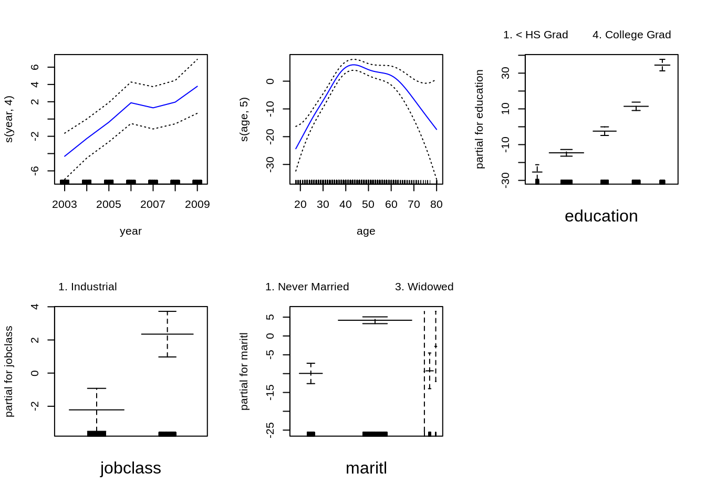
7.2.3 Question 8
Fit some of the non-linear models investigated in this chapter to the
Autodata set. Is there evidence for non-linear relationships in this data set? Create some informative plots to justify your answer.
Here we want to explore a range of non-linear models. First let’s look at the relationships between the variables in the data.
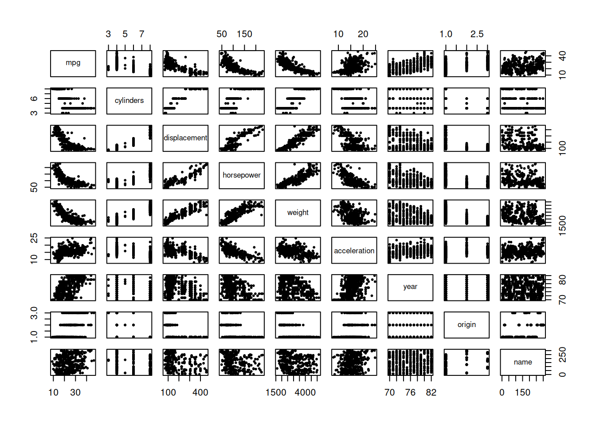
It does appear that there are some non-linear relationships (e.g. horsepower / weight and mpg). We will pick one variable (horsepower) to predict mpg and try the range of models discussed in this chapter. We will measure test MSE through cross-validation to compare the models.
## ── Attaching core tidyverse packages ──────────────────────── tidyverse 2.0.0 ──
## ✔ dplyr 1.2.0 ✔ readr 2.2.0
## ✔ forcats 1.0.1 ✔ stringr 1.6.0
## ✔ lubridate 1.9.5 ✔ tibble 3.3.1
## ✔ purrr 1.2.1 ✔ tidyr 1.3.2
## ── Conflicts ────────────────────────────────────────── tidyverse_conflicts() ──
## ✖ purrr::accumulate() masks foreach::accumulate()
## ✖ dplyr::filter() masks stats::filter()
## ✖ dplyr::lag() masks stats::lag()
## ✖ purrr::when() masks foreach::when()
## ℹ Use the conflicted package (<http://conflicted.r-lib.org/>) to force all conflicts to become errorsset.seed(42)
fit <- glm(mpg ~ horsepower, data = Auto)
err <- cv.glm(Auto, fit, K = 10)$delta[1]
fit1 <- glm(mpg ~ poly(horsepower, 4), data = Auto)
err1 <- cv.glm(Auto, fit1, K = 10)$delta[1]
q <- quantile(Auto$horsepower)
Auto$hp_cats <- cut(Auto$horsepower, breaks = q, include.lowest = TRUE)
fit2 <- glm(mpg ~ hp_cats, data = Auto)
err2 <- cv.glm(Auto, fit2, K = 10)$delta[1]
fit3 <- glm(mpg ~ bs(horsepower, df = 4), data = Auto)
err3 <- cv.glm(Auto, fit3, K = 10)$delta[1]## Warning in bs(horsepower, degree = 3L, knots = 92, Boundary.knots = c(46L, :
## some 'x' values beyond boundary knots may cause ill-conditioned bases
## Warning in bs(horsepower, degree = 3L, knots = 92, Boundary.knots = c(46L, :
## some 'x' values beyond boundary knots may cause ill-conditioned basesfit4 <- glm(mpg ~ ns(horsepower, 4), data = Auto)
err4 <- cv.glm(Auto, fit4, K = 10)$delta[1]
fit5 <- gam(mpg ~ s(horsepower, df = 4), data = Auto)
# rough 10-fold cross-validation for gam.
err5 <- mean(replicate(10, {
b <- cut(sample(seq_along(Auto$horsepower)), 10)
pred <- numeric()
for (i in 1:10) {
train <- b %in% levels(b)[-i]
f <- gam(mpg ~ s(horsepower, df = 4), data = Auto[train, ])
pred[!train] <- predict(f, Auto[!train, ])
}
mean((Auto$mpg - pred)^2) # MSE
}))
c(err, err1, err2, err3, err4, err5)## [1] 24.38418 19.94222 20.37940 18.92802 19.33556 19.02999## Analysis of Deviance Table
##
## Model 1: mpg ~ horsepower
## Model 2: mpg ~ poly(horsepower, 4)
## Model 3: mpg ~ hp_cats
## Model 4: mpg ~ bs(horsepower, df = 4)
## Model 5: mpg ~ ns(horsepower, 4)
## Model 6: mpg ~ s(horsepower, df = 4)
## Resid. Df Resid. Dev Df Deviance F Pr(>F)
## 1 390 9385.9
## 2 387 7399.5 3.00000000 1986.39 35.258 < 2.2e-16 ***
## 3 388 7805.4 -1.00000000 -405.92 21.615 4.578e-06 ***
## 4 387 7276.5 1.00000000 528.94 28.166 1.880e-07 ***
## 5 387 7248.6 0.00000000 27.91
## 6 387 7267.7 0.00013612 -19.10
## ---
## Signif. codes: 0 '***' 0.001 '**' 0.01 '*' 0.05 '.' 0.1 ' ' 1x <- seq(min(Auto$horsepower), max(Auto$horsepower), length.out = 1000)
pred <- data.frame(
x = x,
"Linear" = predict(fit, data.frame(horsepower = x)),
"Polynomial" = predict(fit1, data.frame(horsepower = x)),
"Step" = predict(fit2, data.frame(hp_cats = cut(x, breaks = q, include.lowest = TRUE))),
"Regression spline" = predict(fit3, data.frame(horsepower = x)),
"Natural spline" = predict(fit4, data.frame(horsepower = x)),
"Smoothing spline" = predict(fit5, data.frame(horsepower = x)),
check.names = FALSE
)
pred <- pivot_longer(pred, -x)
ggplot(Auto, aes(horsepower, mpg)) +
geom_point(color = alpha("steelblue", 0.4)) +
geom_line(data = pred, aes(x, value, color = name)) +
theme_bw()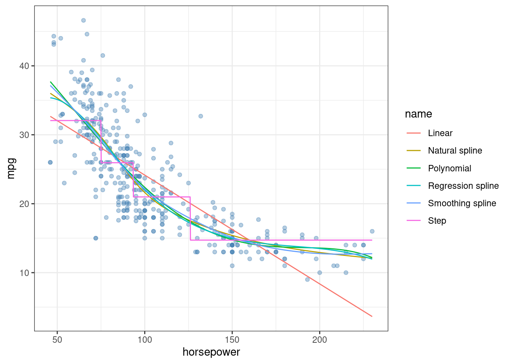
7.2.4 Question 9
This question uses the variables
dis(the weighted mean of distances to five Boston employment centers) andnox(nitrogen oxides concentration in parts per 10 million) from theBostondata. We will treatdisas the predictor andnoxas the response.
- Use the
poly()function to fit a cubic polynomial regression to predictnoxusingdis. Report the regression output, and plot the resulting data and polynomial fits.
##
## Call:
## glm(formula = nox ~ poly(dis, 3), data = Boston)
##
## Coefficients:
## Estimate Std. Error t value Pr(>|t|)
## (Intercept) 0.554695 0.002759 201.021 < 2e-16 ***
## poly(dis, 3)1 -2.003096 0.062071 -32.271 < 2e-16 ***
## poly(dis, 3)2 0.856330 0.062071 13.796 < 2e-16 ***
## poly(dis, 3)3 -0.318049 0.062071 -5.124 4.27e-07 ***
## ---
## Signif. codes: 0 '***' 0.001 '**' 0.01 '*' 0.05 '.' 0.1 ' ' 1
##
## (Dispersion parameter for gaussian family taken to be 0.003852802)
##
## Null deviance: 6.7810 on 505 degrees of freedom
## Residual deviance: 1.9341 on 502 degrees of freedom
## AIC: -1370.9
##
## Number of Fisher Scoring iterations: 2plot(nox ~ dis, data = Boston, col = alpha("steelblue", 0.4), pch = 19)
x <- seq(min(Boston$dis), max(Boston$dis), length.out = 1000)
lines(x, predict(fit, data.frame(dis = x)), col = "red", lty = 2)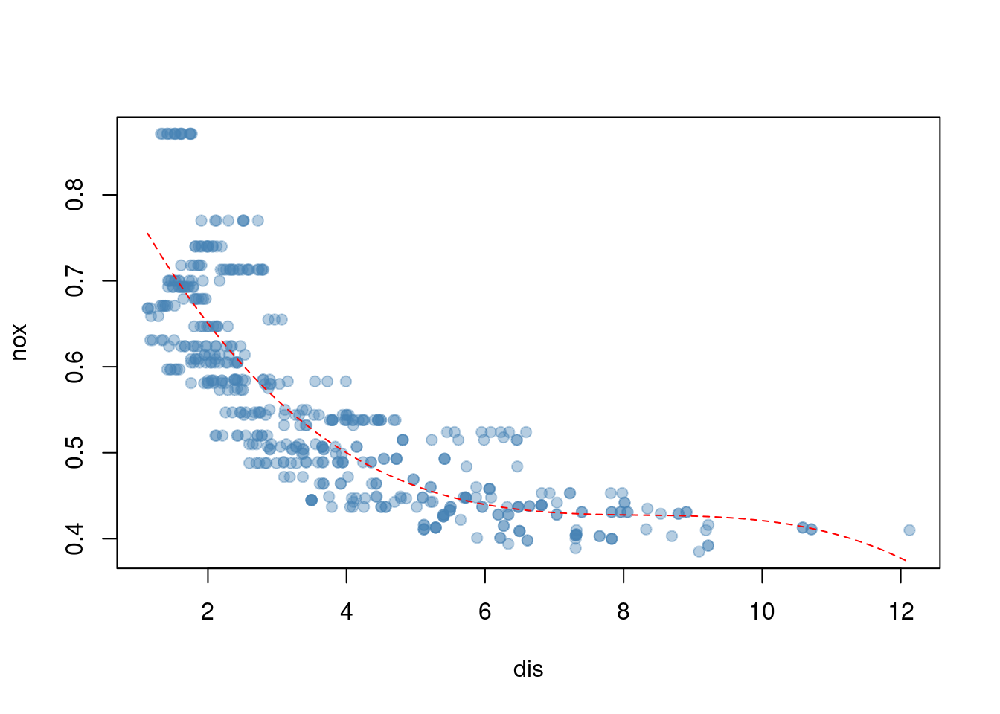
- Plot the polynomial fits for a range of different polynomial degrees (say, from 1 to 10), and report the associated residual sum of squares.
fits <- lapply(1:10, function(i) glm(nox ~ poly(dis, i), data = Boston))
x <- seq(min(Boston$dis), max(Boston$dis), length.out = 1000)
pred <- data.frame(lapply(fits, function(fit) predict(fit, data.frame(dis = x))))
colnames(pred) <- 1:10
pred$x <- x
pred <- pivot_longer(pred, !x)
ggplot(Boston, aes(dis, nox)) +
geom_point(color = alpha("steelblue", 0.4)) +
geom_line(data = pred, aes(x, value, color = name)) +
theme_bw()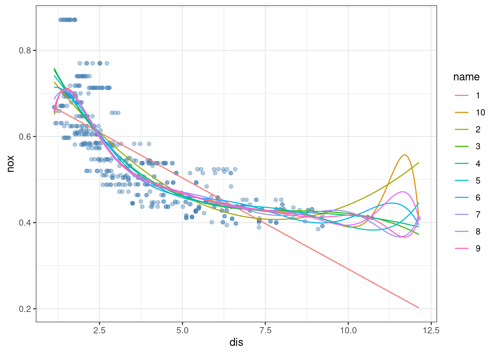
## [1] 2.768563 2.035262 1.934107 1.932981 1.915290 1.878257 1.849484 1.835630
## [9] 1.833331 1.832171
- Perform cross-validation or another approach to select the optimal degree for the polynomial, and explain your results.
res <- sapply(1:10, function(i) {
fit <- glm(nox ~ poly(dis, i), data = Boston)
cv.glm(Boston, fit, K = 10)$delta[1]
})
which.min(res)## [1] 4The optimal degree is 3 based on cross-validation. Higher values tend to lead to overfitting.
- Use the
bs()function to fit a regression spline to predictnoxusingdis. Report the output for the fit using four degrees of freedom. How did you choose the knots? Plot the resulting fit.
##
## Call:
## glm(formula = nox ~ bs(dis, df = 4), data = Boston)
##
## Coefficients:
## Estimate Std. Error t value Pr(>|t|)
## (Intercept) 0.73447 0.01460 50.306 < 2e-16 ***
## bs(dis, df = 4)1 -0.05810 0.02186 -2.658 0.00812 **
## bs(dis, df = 4)2 -0.46356 0.02366 -19.596 < 2e-16 ***
## bs(dis, df = 4)3 -0.19979 0.04311 -4.634 4.58e-06 ***
## bs(dis, df = 4)4 -0.38881 0.04551 -8.544 < 2e-16 ***
## ---
## Signif. codes: 0 '***' 0.001 '**' 0.01 '*' 0.05 '.' 0.1 ' ' 1
##
## (Dispersion parameter for gaussian family taken to be 0.003837874)
##
## Null deviance: 6.7810 on 505 degrees of freedom
## Residual deviance: 1.9228 on 501 degrees of freedom
## AIC: -1371.9
##
## Number of Fisher Scoring iterations: 2plot(nox ~ dis, data = Boston, col = alpha("steelblue", 0.4), pch = 19)
x <- seq(min(Boston$dis), max(Boston$dis), length.out = 1000)
lines(x, predict(fit, data.frame(dis = x)), col = "red", lty = 2)Knots are chosen based on quantiles of the data.
- Now fit a regression spline for a range of degrees of freedom, and plot the resulting fits and report the resulting RSS. Describe the results obtained.
fits <- lapply(3:10, function(i) {
glm(nox ~ bs(dis, df = i), data = Boston)
})
x <- seq(min(Boston$dis), max(Boston$dis), length.out = 1000)
pred <- data.frame(lapply(fits, function(fit) predict(fit, data.frame(dis = x))))
colnames(pred) <- 3:10
pred$x <- x
pred <- pivot_longer(pred, !x)
ggplot(Boston, aes(dis, nox)) +
geom_point(color = alpha("steelblue", 0.4)) +
geom_line(data = pred, aes(x, value, color = name)) +
theme_bw()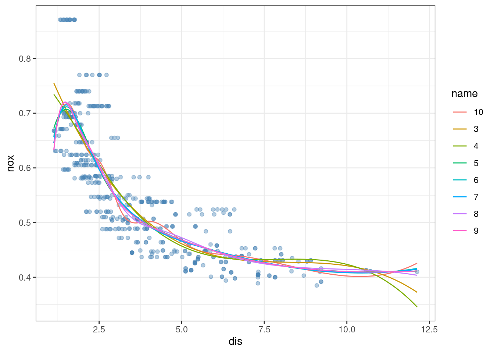
At high numbers of degrees of freedom the splines overfit the data (particularly at extreme ends of the distribution of the predictor variable).
- Perform cross-validation or another approach in order to select the best degrees of freedom for a regression spline on this data. Describe your results.
set.seed(42)
err <- sapply(3:10, function(i) {
fit <- glm(nox ~ bs(dis, df = i), data = Boston)
suppressWarnings(cv.glm(Boston, fit, K = 10)$delta[1])
})
which.min(err)## [1] 8This approach would select 4 degrees of freedom for the spline.
7.2.5 Question 10
This question relates to the
Collegedata set.
- Split the data into a training set and a test set. Using out-of-state tuition as the response and the other variables as the predictors, perform forward stepwise selection on the training set in order to identify a satisfactory model that uses just a subset of the predictors.
library(leaps)
# helper function to predict from a regsubsets model
predict.regsubsets <- function(object, newdata, id, ...) {
form <- as.formula(object$call[[2]])
mat <- model.matrix(form, newdata)
coefi <- coef(object, id = id)
xvars <- names(coefi)
mat[, xvars] %*% coefi
}
set.seed(42)
train <- rep(TRUE, nrow(College))
train[sample(seq_len(nrow(College)), nrow(College) * 1 / 3)] <- FALSE
fit <- regsubsets(Outstate ~ ., data = College[train, ], nvmax = 17, method = "forward")
plot(summary(fit)$bic, type = "b")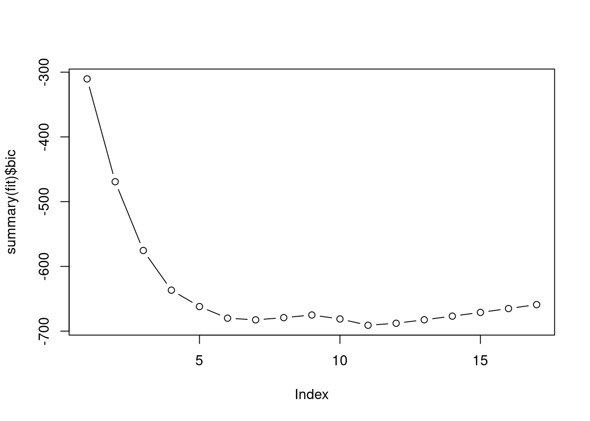
## [1] 11# or via cross-validation
err <- sapply(1:17, function(i) {
x <- coef(fit, id = i)
mean((College$Outstate[!train] - predict(fit, College[!train, ], i))^2)
})
which.min(err)## [1] 16## [1] -690.9375For the sake of simplicity we’ll choose 6
## (Intercept) PrivateYes Room.Board PhD perc.alumni
## -3540.0544008 2736.4231642 0.9061752 33.7848157 47.1998115
## Expend Grad.Rate
## 0.2421685 33.3137332
- Fit a GAM on the training data, using out-of-state tuition as the response and the features selected in the previous step as the predictors. Plot the results, and explain your findings.
fit <- gam(Outstate ~ Private + s(Room.Board, 2) + s(PhD, 2) + s(perc.alumni, 2) +
s(Expend, 2) + s(Grad.Rate, 2), data = College[train, ])
- Evaluate the model obtained on the test set, and explain the results obtained.
pred <- predict(fit, College[!train, ])
err_gam <- mean((College$Outstate[!train] - pred)^2)
plot(err, ylim = c(min(err_gam, err), max(err)), type = "b")
abline(h = err_gam, col = "red", lty = 2)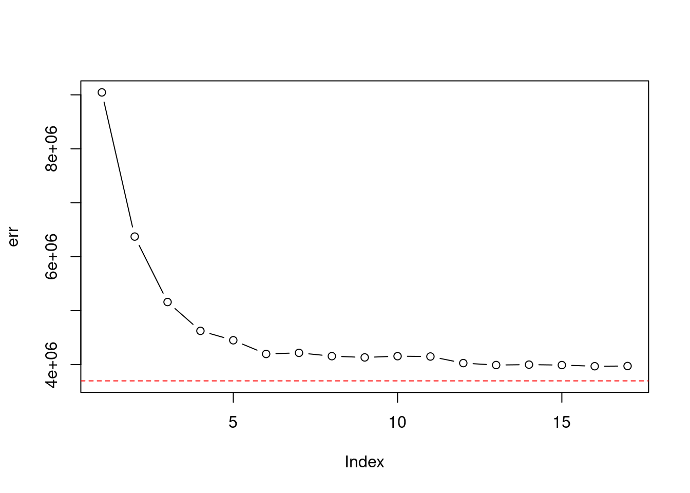
## [1] 0.7655905
- For which variables, if any, is there evidence of a non-linear relationship with the response?
##
## Call: gam(formula = Outstate ~ Private + s(Room.Board, 2) + s(PhD,
## 2) + s(perc.alumni, 2) + s(Expend, 2) + s(Grad.Rate, 2),
## data = College[train, ])
## Deviance Residuals:
## Min 1Q Median 3Q Max
## -7112.59 -1188.98 33.13 1238.54 8738.65
##
## (Dispersion Parameter for gaussian family taken to be 3577008)
##
## Null Deviance: 8471793308 on 517 degrees of freedom
## Residual Deviance: 1809966249 on 506.0001 degrees of freedom
## AIC: 9300.518
##
## Number of Local Scoring Iterations: NA
##
## Anova for Parametric Effects
## Df Sum Sq Mean Sq F value Pr(>F)
## Private 1 2327235738 2327235738 650.610 < 2.2e-16 ***
## s(Room.Board, 2) 1 1741918028 1741918028 486.976 < 2.2e-16 ***
## s(PhD, 2) 1 668408518 668408518 186.863 < 2.2e-16 ***
## s(perc.alumni, 2) 1 387819183 387819183 108.420 < 2.2e-16 ***
## s(Expend, 2) 1 625813340 625813340 174.954 < 2.2e-16 ***
## s(Grad.Rate, 2) 1 111881207 111881207 31.278 3.664e-08 ***
## Residuals 506 1809966249 3577008
## ---
## Signif. codes: 0 '***' 0.001 '**' 0.01 '*' 0.05 '.' 0.1 ' ' 1
##
## Anova for Nonparametric Effects
## Npar Df Npar F Pr(F)
## (Intercept)
## Private
## s(Room.Board, 2) 1 2.224 0.13648
## s(PhD, 2) 1 5.773 0.01664 *
## s(perc.alumni, 2) 1 0.365 0.54581
## s(Expend, 2) 1 61.182 3.042e-14 ***
## s(Grad.Rate, 2) 1 4.126 0.04274 *
## ---
## Signif. codes: 0 '***' 0.001 '**' 0.01 '*' 0.05 '.' 0.1 ' ' 1Non-linear relationships are significant for Expend and PhD.
7.2.6 Question 11
In Section 7.7, it was mentioned that GAMs are generally fit using a backfitting approach. The idea behind backfitting is actually quite simple. We will now explore backfitting in the context of multiple linear regression.
Suppose that we would like to perform multiple linear regression, but we do not have software to do so. Instead, we only have software to perform simple linear regression. Therefore, we take the following iterative approach: we repeatedly hold all but one coefficient estimate fixed at its current value, and update only that coefficient estimate using a simple linear regression. The process is continued until convergence—that is, until the coefficient estimates stop changing.
We now try this out on a toy example.
- Generate a response \(Y\) and two predictors \(X_1\) and \(X_2\), with \(n = 100\).
- Initialize \(\hat{\beta}_1\) to take on a value of your choice. It does not matter 1 what value you choose.
Keeping \(\hat{\beta}_1\) fixed, fit the model \[Y - \hat{\beta}_1X_1 = \beta_0 + \beta_2X_2 + \epsilon.\] You can do this as follows:
Keeping \(\hat{\beta}_2\) fixed, fit the model \[Y - \hat{\beta}_2X_2 = \beta_0 + \beta_1 X_1 + \epsilon.\] You can do this as follows:
- Write a for loop to repeat (c) and (d) 1,000 times. Report the estimates of \(\hat{\beta}_0, \hat{\beta}_1,\) and \(\hat{\beta}_2\) at each iteration of the for loop. Create a plot in which each of these values is displayed, with \(\hat{\beta}_0, \hat{\beta}_1,\) and \(\hat{\beta}_2\) each shown in a different color.
res <- matrix(NA, nrow = 1000, ncol = 3)
colnames(res) <- c("beta0", "beta1", "beta2")
beta1 <- 20
for (i in 1:1000) {
beta2 <- lm(y - beta1 * x1 ~ x2)$coef[2]
beta1 <- lm(y - beta2 * x2 ~ x1)$coef[2]
beta0 <- lm(y - beta2 * x2 ~ x1)$coef[1]
res[i, ] <- c(beta0, beta1, beta2)
}
res <- as.data.frame(res)
res$Iteration <- 1:1000
res <- pivot_longer(res, !Iteration)
p <- ggplot(res, aes(x = Iteration, y = value, color = name)) +
geom_line() +
geom_point() +
scale_x_continuous(trans = "log10")
p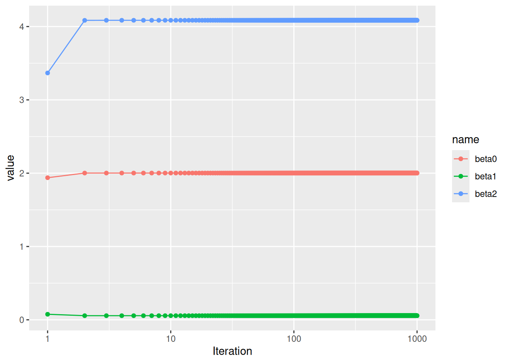
- Compare your answer in (e) to the results of simply performing multiple linear regression to predict \(Y\) using \(X_1\) and \(X_2\). Use the
abline()function to overlay those multiple linear regression coefficient estimates on the plot obtained in (e).
## (Intercept) x1 x2
## 2.00176627 0.05629075 4.08529318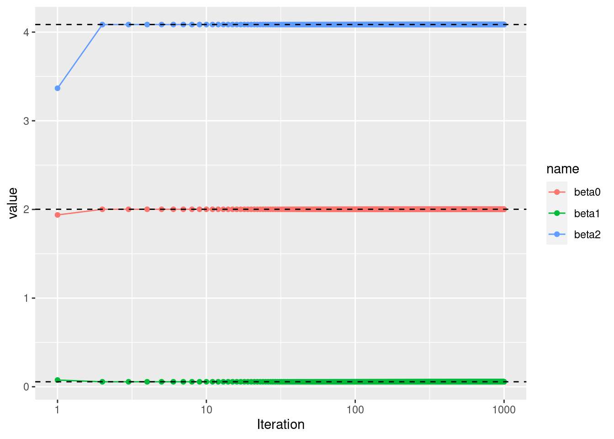
- On this data set, how many backfitting iterations were required in order to obtain a “good” approximation to the multiple regression coefficient estimates?
In this case, good estimates were obtained after 3 iterations.
7.2.7 Question 12
This problem is a continuation of the previous exercise. In a toy example with \(p = 100\), show that one can approximate the multiple linear regression coefficient estimates by repeatedly performing simple linear regression in a backfitting procedure. How many backfitting iterations are required in order to obtain a “good” approximation to the multiple regression coefficient estimates? Create a plot to justify your answer.
set.seed(42)
p <- 100
n <- 1000
betas <- rnorm(p) * 5
x <- matrix(rnorm(n * p), ncol = p, nrow = n)
y <- (x %*% betas) + rnorm(n) # ignore beta0 for simplicity
# multiple regression
fit <- lm(y ~ x - 1)
coef(fit)## x1 x2 x3 x4 x5 x6
## 6.9266184 -2.8428817 1.8686821 3.1466472 1.9601927 -0.5529214
## x7 x8 x9 x10 x11 x12
## 7.4786723 -0.4454637 10.0816005 -0.2391234 6.5832468 11.4451280
## x13 x14 x15 x16 x17 x18
## -6.9684368 -1.3604495 -0.6310041 3.1786639 -1.4470502 -13.2957027
## x19 x20 x21 x22 x23 x24
## -12.2061834 6.5765842 -1.5227262 -8.8855906 -0.8422954 6.1189230
## x25 x26 x27 x28 x29 x30
## 9.4395267 -2.1697854 -1.2738835 -8.8457987 2.2851699 -3.1922704
## x31 x32 x33 x34 x35 x36
## 2.2812995 3.4695892 5.1162617 -3.0423873 2.4985589 -8.5952764
## x37 x38 x39 x40 x41 x42
## -3.9539370 -4.2616463 -12.0038342 0.1981058 1.0559250 -1.8205017
## x43 x44 x45 x46 x47 x48
## 3.7739990 -3.6240020 -6.8575534 2.1042998 -4.0228773 7.1880298
## x49 x50 x51 x52 x53 x54
## -2.1967821 3.3137115 1.6406524 -3.9402065 7.9067705 3.1815846
## x55 x56 x57 x58 x59 x60
## 0.4504175 1.4003479 3.3999814 0.4317695 -14.9255798 1.3816878
## x61 x62 x63 x64 x65 x66
## -1.8071634 0.9907740 2.9771540 6.9528872 -3.5956916 6.5283946
## x67 x68 x69 x70 x71 x72
## 1.6798820 5.1911857 4.5573256 3.5961319 -5.1909352 -0.4869003
## x73 x74 x75 x76 x77 x78
## 3.1472166 -4.7898363 -2.7402076 2.9247173 3.8659938 2.3686379
## x79 x80 x81 x82 x83 x84
## -4.4261734 -5.5020688 7.5807239 1.3010702 0.4378713 -0.5856580
## x85 x86 x87 x88 x89 x90
## -5.9799328 3.0089329 -1.1230969 -0.8857679 4.7211363 4.1042952
## x91 x92 x93 x94 x95 x96
## 6.9492037 -2.3959211 3.2188522 6.9947040 -5.5392641 -4.3114784
## x97 x98 x99 x100
## -5.7287292 -7.3148812 0.3454408 3.2830658# backfitting
backfit <- function(x, y, iter = 20) {
beta <- matrix(0, ncol = ncol(x), nrow = iter + 1)
for (i in 1:iter) {
for (k in seq_len(ncol(x))) {
residual <- y - (x[, -k] %*% beta[i, -k])
beta[i + 1, k] <- lm(residual ~ x[, k])$coef[2]
}
}
beta[-1, ]
}
res <- backfit(x, y)
error <- rowMeans(sweep(res, 2, betas)^2)
plot(error, log = "x", type = "b")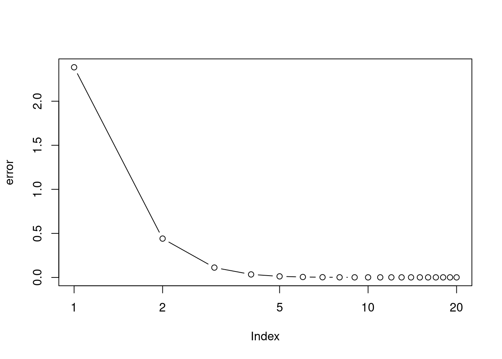
## [1] 0.001142494## [1] 0.001138655We need around 5 to 6 iterations to obtain a good estimate of the coefficients.